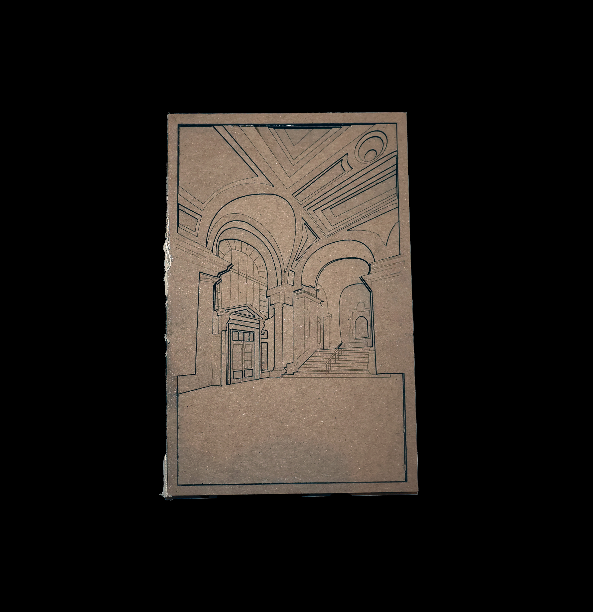
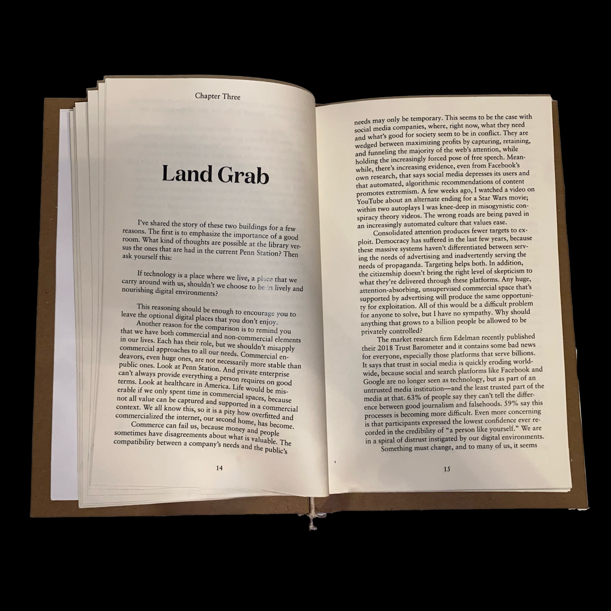
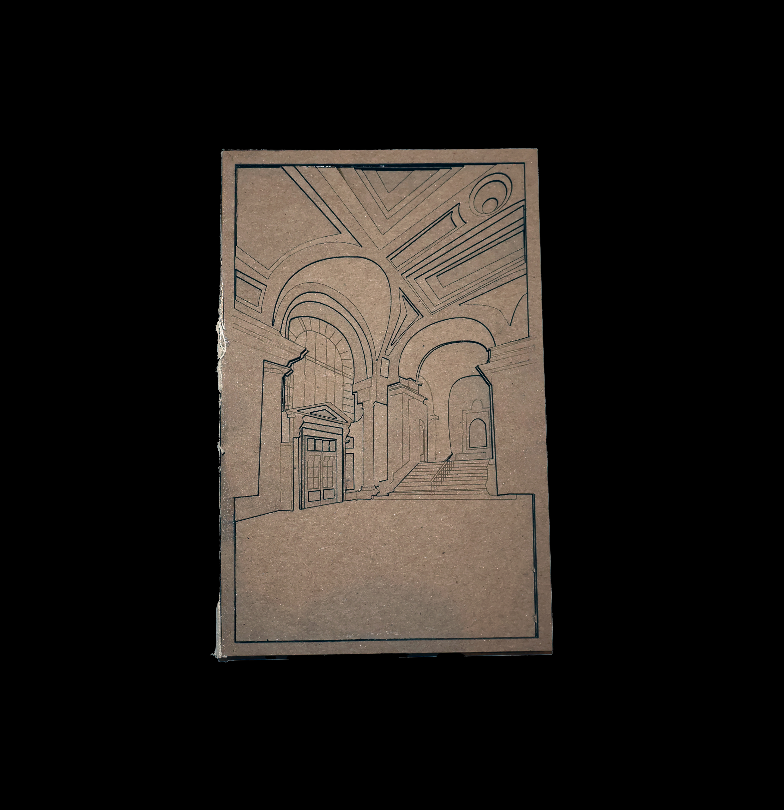
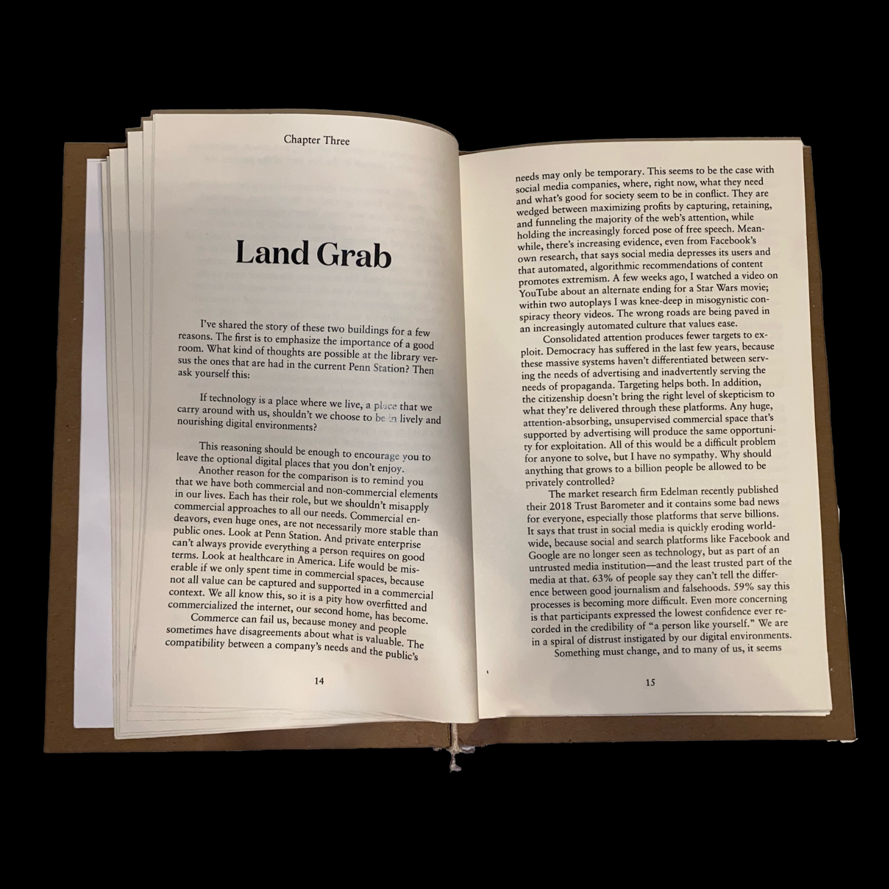
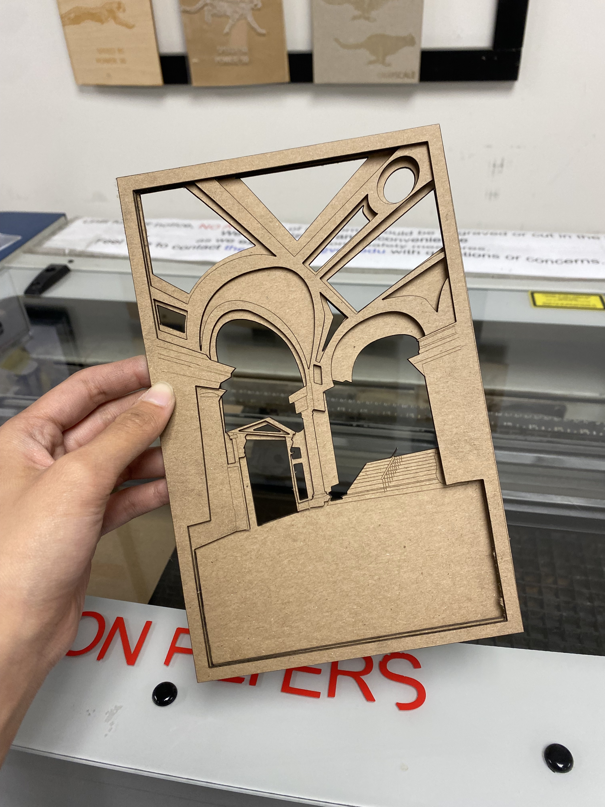
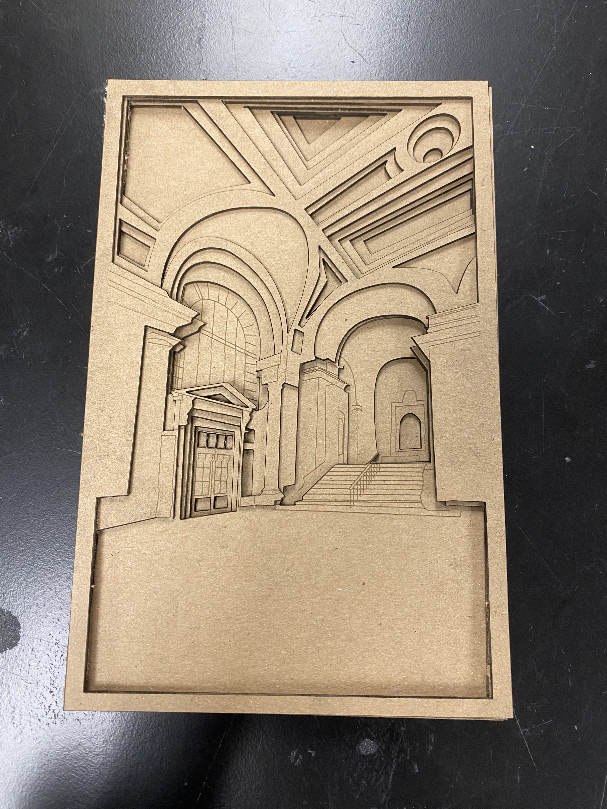

KALISSA TAN
The Good Room
A re-circulation of Frank Chimero's "The Good Room"
While learning the basics of Web Design, I was captured by this text and the perspective offered by Frank Chimero on how our world is changing. Rooms are becoming cold, lacking the beautiful details of past buildings, and the same goes for websites, falling victim to the same template instead of having a "handmade" quality. The way the web and the world started is being left behind in favor of simpler designs and an attention economy. This book contains the text, but the star is the chipboard layered display of the New York Public Library, one of the places Chimero praised for maintaining creative integrity.
Read Frank Chimero's "The Good Room".
Read Frank Chimero's "The Good Room".
Year: 2024
Skills: Print Production, Adobe InDesign,
Adobe Illustrator, Epilog Zing Laser Cutter
Skills: Print Production, Adobe InDesign,
Adobe Illustrator, Epilog Zing Laser Cutter
Flipthrough of the book.
Front of the book.
Inside of the book.
 



Example of stacked layers.
Layers all assembled together.
All the layers used in the cover.
Close up of layers.

